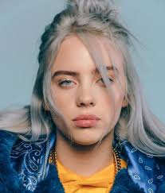
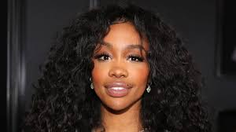
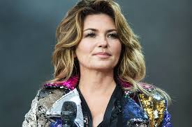
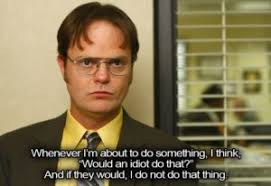
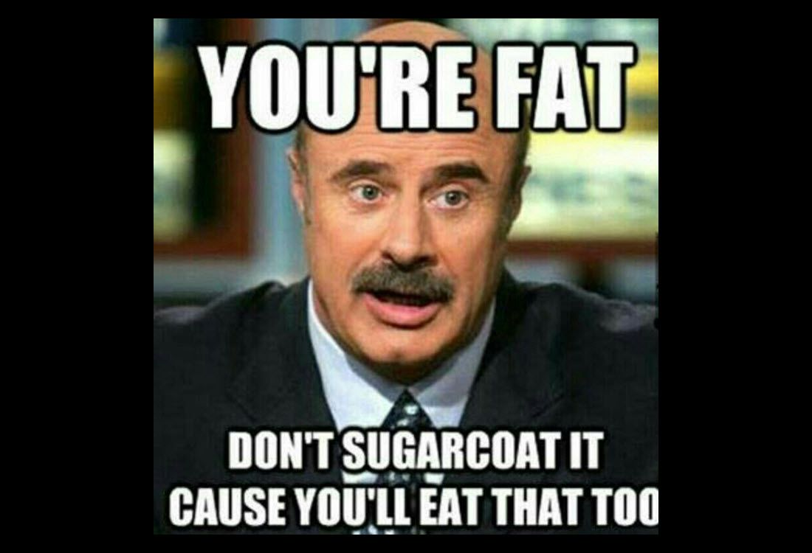
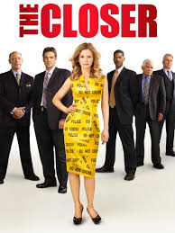
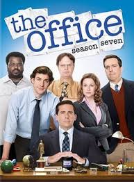
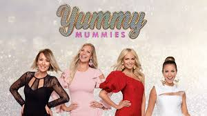

Billie Eilish (on the left) is one of my favorite artists. She is very weird and creepy, but if you do some research or listen to the
lyrics closely, there is a lot of meaning. My favorite songs by her are "My Boy", "Bad Guy", "Bury a Friend" and "Bellyache".
Sza (in the middle), which stands for "Sovereign", "zigzag" and "Allah" is an artists that makes a lot of songs that relate to intimate relationships
that she has had in her life. They include both bad and good things. I like her songs because they have a fresh, yet calm feeling. My
favorite songs by her are "Supermodel", "Garden (Say It Like Dat)" and "Love Galore". Although, they are a bit explicit.
Shania Twain (on the right) is amazing in so many ways. I never thought that I would listen to country music until I heard her music. To me,
they have a classical and peaceful feeling. Her voice is like a lullaby to me! Her songs are mostly about liberty and "being a woman"! My
favorite songs by her are "Forever and For Always", "From This Moment" and "Man! I Feel Like a Woman".





The Closer (on the left) is one of my favorite shows because it is a mystery show. The main character,
Brenda, is a detective that is very driven and motivated in her work. She has a team of people that
work with her and they all have unique personalities. In every episode, Brenda faces a new challenge
and it is a very interesting show to watch. Although it has stopped airing a while ago, you will learn to appreciate
the style of the show. It airs on the channel, LifeTime, all the time, so make sure to hit that record button!
The Office (in the middle) is a show that I love very much, because it is corny. That matches
my personality almost perfectly! The main character, Michael Scott, is one of my favorite characters because he is awkward
and the faces that he makes are hilarious. He combats problems in life regarding intimate relationships, the Dundler Mifflin Paper
Company and the workers in his office in a way that you wouldn't expect...but in a good way! Watch it now! I watch
it on Netflix.
Yummy Mummies (on the right) is a show that you will love and hate at the same time. The show is about moms in Australia who
live in Australia and are dubbed the "Yummy Mummies", because even though they have kids or are going through a pregnancy,
they look amazing doing so. They have a lot of money (you can tell), but their personalities don't represent that. But there
is one character that you will hate very fast...her name is Maria and she has it all! Literally, everything in her house is Versace.
You will hate Versace after watching this show. She has it all, but has a stinky attitude. If you don't please her, things will go wrong.
I love the show because it is funny to see the fights and the glamorous things that go on in the life of the yummy mummies.
I believe that this show only streams on Netflix and they recently just came out with Season 2. Watch Now!